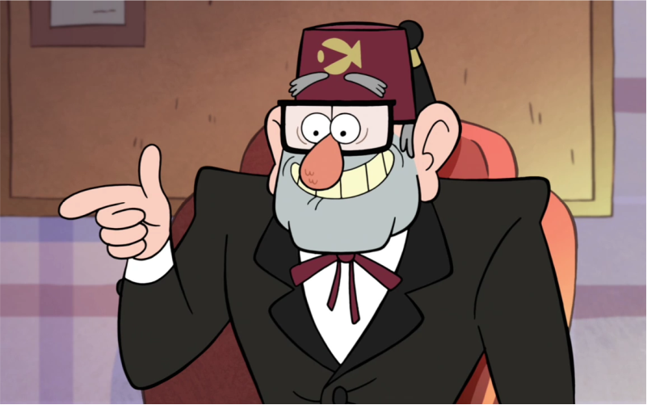
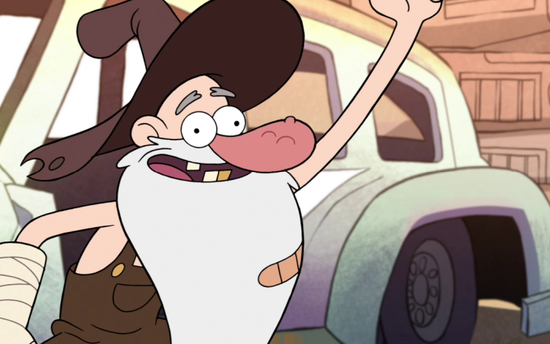

Enredo
A série segue as aventuras de Dipper Pines e sua irmã gêmea Mabel de 12 anos, que são enviadas para passar suas férias de verão com seu tio-avô Stanford Pines (mas chamado apenas de "Ti-vô" Stan), em Gravity Falls, uma cidade misteriosa cheia de forças paranormais e criaturas sobrenaturais.
As crianças ajudam Stan a administrar "A Cabana do Mistério", a armadilha turística que ele possui, enquanto também investigam os verdadeiros mistérios do local. Nada é o que parece nessa cidadezinha, e com ajuda de um diário misterioso que Dipper acha na floresta, eles começam a desvendar os mistérios locais.
Com participações de Wendy Corduroy, adolescente de 15 anos que trabalha como caixa na Cabana do Mistério e por quem Dipper nutre uma paixão secreta; Soos Ramirez, amigo dos gêmeos que trabalha para Ti-vô Stan; além de uma variedade de outros personagens eventuais (que acabam não sendo tão secundários quanto parecem a princípio); Dipper e Mabel sempre têm um dia intrigante pela frente.
A inspiração!
Alex Hirsch diz que a inspiração para a criação da série veio de suas viagens de infância para a cidade de Boring, no Oregon.
Em inglês, Boring pode ser traduzido como Entediante, mas Hirsch diz que isso era o completo oposto da cidade, já que, para ele, aquela era a cidade mais fascinante que existia, pois era onde passava suas férias e vivia suas próprias aventuras.
Entre a primeira e a segunda temporada de Gravity Falls, toda a equipe de produção realizou uma viagem pela costa dos Estados Unidos até a cidade de Boring e foram parando em todas as atrações turísticas. Isso enriqueceu os detalhes da animação e deixou o grupo ainda mais unido.
Outro detalhe interessante é que toda a história do desenho se passa na duração de um verão, que era o tempo que Hirsch e sua família ficavam na cidade de Boring.
O Autor
Alex Hirsch (nascido em 18 de Junho, 1985 em Piedmont, California) é o criador, produtor executivo e diretor da série Gravity Falls do canal Disney Channel. Ele dubla personagens principais como Stan Pines e Soos como também personagens recorrentes e secudários como o Velho McGucket e os Gnomos. Sua irmã gêmea é Ariel Hirsch.
Ele põe muitas experiencias de sua vida real no show, como por exemplo em sua infância ele viveu em Piedmont assim como Dipper e Mabel, ou como ele foi pedir doces no Dia das Bruxas com sua irmã gêmea vestidos de gatos. Ele usou sua irmã gêmea Ariel como inspiração para Mabel, seu avô Stan como inspiração para Grunkle Stan (ou Tivô Stan), e baseou o show levemente em sua infância. Ele deu um porco á Mabel porque sua irmã quando criança também queria um.
Personagens
Dippermore_vert
closeDipper
Dipper é um rapaz de 12 anos de idade que, juntamente com sua irmã gêmea Mabel, é enviado para passar suas férias de verão na Cabana do Mistério. Ele se esforça para descobrir os segredos da cidade ficcional de Gravity Falls e encontrar explicações para as situações estranhas.
Mabelmore_vert
closeMabel
Mabel é uma menina de 12 anos de idade, energética (ela e seu irmão completam 13 no final do final da série) que junto com seu irmão vão passar suas férias de verão na armadilha para turistas de seu tio-avô, chamada de "Cabana do Mistério".

Stanley "Tivô Stan" Pinesmore_vert
closeStanley "Tivô Stan" Pines
O tio-avô de Dipper e Mabel Pines, melhor caracterizado por seu egoísmo e abrasividade. Ele corre e vive na Cabana do Mistério, uma armadilha turística que é classificado como "o museu mais bizarro do mundo". Tivô Stan é um vendedor em primeiro lugar, colocando a maior parte de seu esforço em ação, e está ansioso para vender alfaiates e bugigangas da cabana por preços assustadores. Por causa de seu esforço para ganhar dinheiro, seus métodos de obtê-lo nem sempre são legais. Quando ele não está ganhando dinheiro, ele geralmente está em casa assistindo televisão.
Soos Ramirezmore_vert
closeSoos Ramirez
Jesus "Soos" Alzamirano Ramirez Soos tem 22 anos de idade Hispânico e trabalhador manual na Cabana do Mistério. Um amigo de Dipper e Mabel, Soos é gordo, adorador de hamster e bastante divertido e engraçado. Ele muitas vezes dirige os gêmeos em torno da cidade quando eles precisam. Ele é um pouco desajeitado, não o mais brilhante do grupo, e muitas vezes está cometendo erros. Apesar disso, ele tem uma grande variedade de talentos, como engenharia, DJ e pinball, e gosta de se unir com Dipper fazendo "coisas de garotos", como aquecimento salsichas em um microondas até que eles explodem. Ele diz "cara/veio" depois de quase toda frase. Em "O Jogo de Blendin", seu aniversário foi revelado: 13 de julho. Também foi revelado que ele não tinha um bom relacionamento com seu pai.
Wendy Corduroymore_vert
closeWendy Corduroy
Wendy é madura, divertida e legal de 15 anos de idade que trabalha de meio expediente na Cabana do Mistério. Ela é a paixão de Dipper, e vários episódios se concentram em suas tentativas equivocadas de impressioná-la. Wendy afirmou que ela tinha muitos namorados no passado tantos, de fato, que há um ex-namorado com quem ela não consegue se lembrar nunca ter terminado com ele. Wendy é a mais velha e mais alta de sua família; Seu pai é Manly Dan, um dos lenhadores locais de Gravity Falls, e ela provou várias vezes que ela é muito filha de seu pai, tendo experiência como um lenhador, tremenda força física.
Stanford Filbrick "Ford" Pinesmore_vert
closeStanford Filbrick "Ford" Pines
Também conhecido como "O Autor " , é um investigador paranormal que veio a Gravity Falls ,Oregon para estudar a enorme concentração de atividade sobrenatural em torno da cidade. Depois de passar anos catalogando sua pesquisa em uma série de diários , ele desapareceu em uma dimensão alternativa. Seus escritos foram deixados como a única evidência de sua existência. A identidade e o paradeiro de Ford foram um mistério central e um prenúncio da série Gravity Falls até o meio da segunda temporada do show, quando ele foi revelado como o irmão gêmeo perdido de Stan Pines. Ford desapareceu em uma outra dimensão, depois de uma briga com seu irmão que o fez tropeçar e cair no portal do universo.
Waddlesmore_vert
closeWaddles
O animal de estimação de Mabel, um porco. Ela ganhou Waddles na feira, e desde então os dois foram inseparáveis. Mostra-se que Waddles gosta de passar tempo com Mabel tanto quanto gosta de passar tempo com ele. Em "Summerween", Waddles permite Mabel para vesti-lo como um homem de negócios e tirar fotos capitando sentimentos dele no estilo de memes internet. Waddles e Mabel são mostrados como inseparáveis, Mabel chora no final da série quando eles tem de se separar.

"O Velho" McGucketmore_vert
close"O Velho" McGucket
O "maluco local" de Gravity Falls e o ex-ajudante do autor dos diários, Stanford Pines. Normalmente aparece nos momentos mais inoportunos pirando pelas ruas. Ele fundou a Sociedade do Olho Cego.
Gideão "Gideãozinho" Gleefulmore_vert
closeGideão "Gideãozinho" Gleeful
Vilão da 1ª temporada. Um garoto médium e vigarista, rival do Tivô Stan. Ele fala com um sotaque sulista, veste roupas formais azuis e tem um grande topete branco que chega a ser quase do tamanho dele. Ele é apaixonado pela Mabel e odeia Dipper Pines considerando ele seu arqui-inimigo. Assim como Dipper ele guardava um livro secreto, o Diário Nº 2 que o ajudava em seu planos. Até o final da primeira temporada ele queria reunir os três diários para conseguir abrir o portal por trás dele, ele rouba a escritura da Cabana do Mistério, porém após uma batalha contra Dipper sua farsa foi revelada para os moradores e ele foi preso.
Bill Ciphermore_vert
closeBill Cipher
Vilão da 2ª temporada e da série. É um demônio triangular, amarelo e ciclope vindo de uma dimensão paralela a 1 Milhão de Anos acreditando-se que ele é mais velho do que a Galaxia. Ele apareceu pela primeira vez no episódio "Escapando do Sonho" quando Gideão o invoca numa tentativa de roubar a escritura da Cabana do Mistério.
Sheriff Blubs e Oficial Durlandmore_vert
closeSheriff Blubs e Oficial Durland
são os dois únicos policiais de Gravity Falls. Frequentemente andam juntos e parecem ter uma afeição muito grande um pelo outro, apesar de desconhecer se eles são um casal. Sheriff Blubs é baixinho, gordo, usa óculos escuros e é negro, enquanto Oficial Durland é magro, alto e tem o nariz rosado.
Candy Chiu e Grendamore_vert
closeCandy Chiu e Grenda
As melhores amigas de Mabel. Assim como Mabel, elas não gostam de Pacifica e por isso tem rivalidade com ela embora isso foi contrariado em "O Mistério do Solar Northwest". Candy é asiática e usa óculos, enquanto que Grenda é grande, bruta e tem uma voz bem grossa masculina.